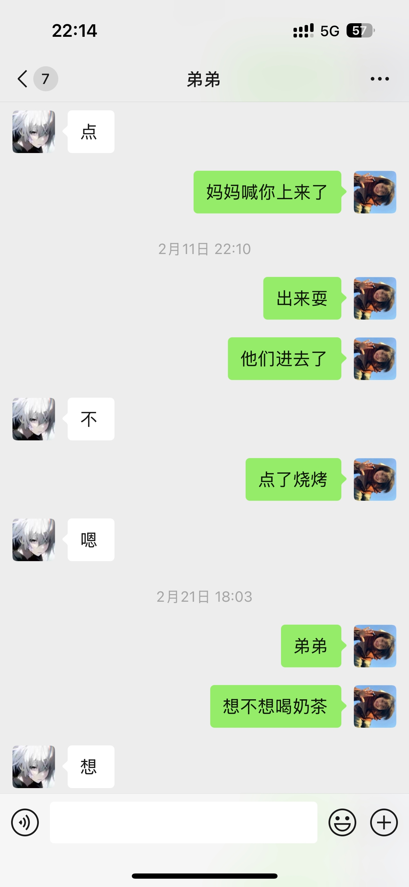

短剧已经癫成我不认识的样子了[捂脸][捂脸][捂脸]
当我频繁刷到这些网剧的时候，我就知道抖音已经把我划分到傻子这一类了
简直是。倒反天罡！！！哈哈哈哈
这么抽象的短剧谁看啊[捂脸]
跟我俩完形填空呢
“科技不再是高高在上而是服务于人民”这句话的含金量再慢慢上升[看]
我怀疑过所有 没怀疑它真的能对[九转大肠]
《理科生打台球》[微笑][微笑]
这么做的原理是找出了两个相似三角形吧
虽然但是[看]
打台球不仅要会数学物理，还要会擦边[暗中观察]
将军饮马模型秒了[憨笑][左上]
原理[送心]
所以，数学达到极致，在各方面都很强是吗[流泪]
什么原理 前面那几条线是干嘛的 好像数学题 看到头就晕了[宕机]
不会成为一道数学题吧[流泪]
后妈的带来的哥哥 很容易害羞 喜欢我被我发现了就在一起了[坏笑]
独生子最爱看骨科了
昨晚放这首歌我哥卡上点了一进一入的
视频里说的是伪骨科，谁说想看你们的聊天记录了[愉快][愉快][愉快]
一个亲戚表哥大半夜给我发的[黑脸]我起床看手机差点没笑死过去
真正的兄妹不应该是这样吗[黑脸]
这才是亲弟[呲牙]
真的很好奇亲兄妹之间的聊天记录
上晚课呢，笑得我一直抖[憨笑]
我弟[黑脸]真的受不了青春期的他，装高冷 
我永远不会搞骨科的，因为我哥像猪头肉[愉快]
我堂哥堂弟干弟亲妹都跟我表过白[憨笑]我亲妹还尝试强吻过我。感觉我们全家都完蛋了[憨笑]👎只有一个可怜的我就这样吓的瑟瑟发抖从此在家只敢穿花棉袄。
一次元:99 二次元:99 三次元:110[憨笑][玫瑰]
骨科就是权威[憨笑][憨笑][憨笑]不懂的放转转回收了
我弟[憨笑]这不才是正常的姐弟之间的相处方式吗
哥你猜我为啥不回你信息，因为命中注定不能靠近～[憨笑]
三次搞骨科的站一排扫射
我哥[憨笑]
姐弟斗争，向来如此残酷[强壮]
来吧说出你们心中top1骨科小说[憨笑]
家里有兄弟姐妹的都不能接受骨科吧[黑脸]
不能光嘴巴说：“对不起”，手也不能闲着，不然显得诚意不够[感谢]
谁懂我的笑点[捂脸]我真的……哈哈哈哈哈……
老板座 气势十足
这个怎么录的，自己的声音和伴奏合一起的。
她真的唱得好棒！！我知道这首歌是从她这里听的，然后就天天哼[捂脸]
胆可真大，在印度穿这样出来[看]
一个《公寓》，一个《不明影像》，一个《粉红色的高跟鞋》，这三部真的好经典！
女主死得好惨啊 明明她帮了那个女生那么多 [尬笑] 这鬼还要带走她
瓦罗兰特青训
当时我以为我完了[泪奔]
就说怎么有一种熟悉的感觉
等长大就变成邪恶起司[吃瓜群众]
眼睛亮亮的宝宝[抱抱你]
长大了就这样了
大早上还是睡的不省人事[捂脸][捂脸][捂脸]

大伟哥：孩子们，这一点也不好笑[微笑]
背单词戴左边得耳机
我寻思听听赵丽颖咋说的，结果一整个视频都是你说[宕机]
说实话我真的觉得足球的守门员比起其他运动项目是最容易忧郁的位置
我曾经的梦想也是踢门将，直到单招那天，亲眼看见走后门的人交了1万，就代替了我6年的努力，我就放弃了。
谁懂啊门将身后的后卫[泣不成声][泣不成声][泣不成声]
这个真不错 门将失去平衡 他动都不敢动[赞][赞]
明天要踢比赛了，很紧张，怎么办兄弟们[流泪]
《跟秀琴似的，炸开了》[黑脸]
感觉意大利炮随时能拉出来！开一炮
“暗地里碰了你一下，你就炸开了”他是碰了一下炸弹吗[憨笑]
《李云龙月夜碎尸案》
灶台炕头弹匣子[笑哭][笑哭][笑哭]你是咋想到一块去的[笑哭][笑哭][笑哭]
等等等等等等[宕机]说起来像物理意义的炸开了[宕机]
有一种李云龙晚上端着一壶酒坐在一口井旁边，给赵刚烧纸的感觉。
看起来凑凑的，实际香香软软的
只要国人不害国人，中国人啥时候都是第一[感谢][感谢][感谢][感谢][感谢][感谢][感谢][赞][赞][赞][赞][赞][赞][赞][玫瑰][玫瑰][玫瑰][玫瑰]
Read more: